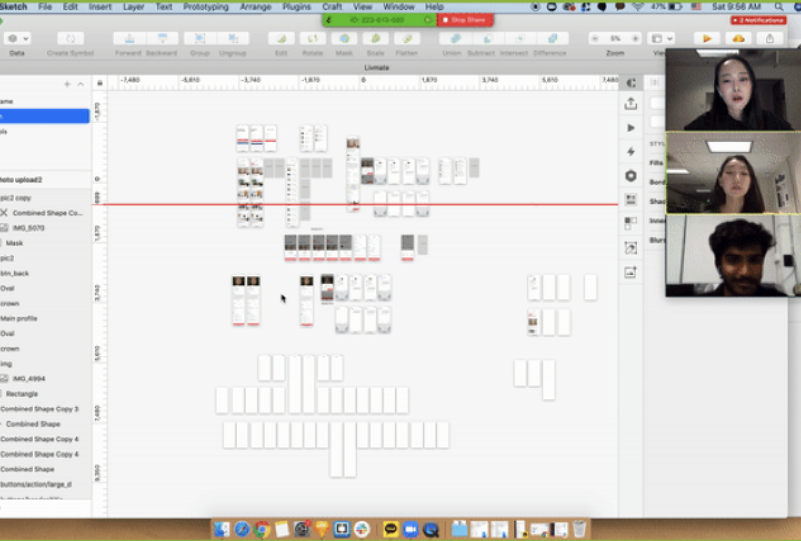

PROJECT OVERVIEW

Our design team worked remotely, so we used online collab tools to share our working process and manage our schedules.
The 10 months of remote collaboration have gone very successful and we are getting close to finishing up our first demo 👏👏👏
“Living in the city is not easy. The living cost here is so high that it’s very difficult for student like me to deal with.
I want to find a roommate to split the rent, but it’s hard to find a person who I could trust and feel comfortable living with.”
-Bianca, 22, lives in Downtown SF
Let’s Talk about Process!
RESEARCH
Participants
• Age: 20s to 40s
• Single
• Living in SF Bay Area
What are we looking for?
• Understand the user needs and frustrations when they are finding a room or a roommate.
• Determine what conditions users are looking for when they are searching for a room or a roommate.
• Find out what kind of expectation they would have when they are looking for a new room room or a roomamte.
Key takeaways
• Users want to find roommates they feel comfortable living with. For instance, having similar interests, life patterns, and culture are mostly desired.
• Users want to avoid scams or people with uncertified information.
• Users want to see some reputation of their future roommates. They wish to know what kind of person he or she is before deciding that person to be their future roommate.

How should we differ from the competitors?
• Increase reliability: Include ID check & rating system to find trustworthy roommates.
• Efficient posting: Provide a template form to easily upload room posts.
• Easy entry: Simplified on-boarding process that allow users to see the list without filling out long forms.